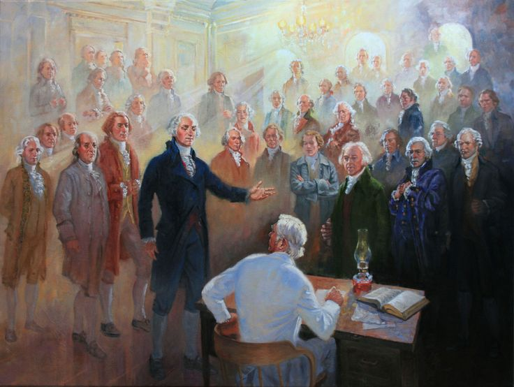
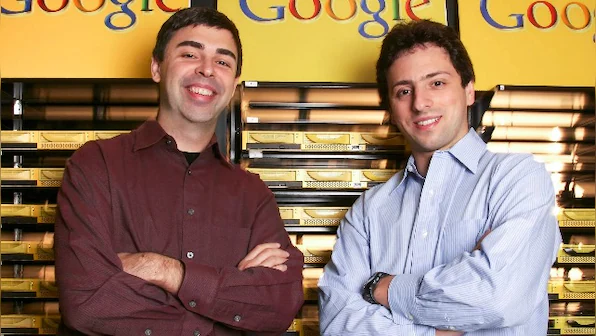
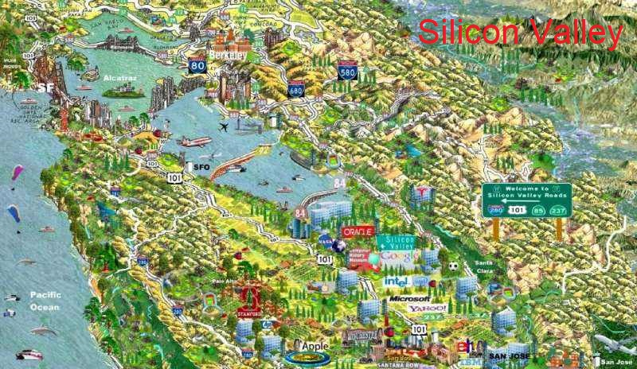

"Bienvenue, Fenêtre sur l'Amérique – votre fenêtre sur les États-Unis ! Ici, nous explorons la culture, l’histoire, la politique et les tendances américaines pour mieux comprendre ce pays fascinant. Que vous soyez passionné par l’Amérique ou simplement curieux, nos articles vous offrent un regard éclairé et objectif sur l’autre côté de l’Atlantique." — Mouad Fard, Editeur.
billet d'humeur
Elon Musk et son drôle d'email
Elon Musk a envoyé un email agressif au gouvernement. Il a dit qu'il était le chef du D.O.G.E (Department of Government Efficiency). Il a exigé des employés : "Qu'avez-vous fait cette semaine ?". Si personne ne répond, il les vire. Sans explication. Sans pitié. C'est brutal. C'est absurde. Il pense ...
En savoir plus >>
Elon Musk et son drôle d'email
By Ibrahim Moustahsine – March 9, 2025
Elon Musk a envoyé un email agressif au gouvernement. Il a dit qu'il était le chef du D.O.G.E (Department of Government Efficiency). Il a exigé des employés : "Qu'avez-vous fait cette semaine ?". Si personne ne répond, il les vire. Sans explication. Sans pitié. C'est brutal. C'est absurde. Il pense que c'est une bonne idée. Mais ce n'est pas vrai. Les gens n'aiment pas travailler avec la peur. Ils veulent du respect. Ils veulent de la confiance. Ils veulent se sentir utiles, pas menacés. Il veut que tout fonctionne vite. Trop vite. Il ne pense pas aux employés. Il veut juste des résultats. Il traite les gens comme des robots. Il croit qu'ils peuvent fonctionner sans pause, sans reconnaissance. Mais à force, plus personne ne voudra travailler pour lui. Il va se retrouver seul.
sait tu que
Le Système électoral de les Etat Unis.
Sait-tu que aux États-Unis, le président n’est pas élu directement par les citoyens. Chaque État a des "grands électeurs" qui votent pour le président. Un candidat doit gagner au moins 270 grands électeurs pour devenir...
En savoir plus >>
Le Système électoral de les Etat Unis.
By Ibrahim Moustahsine – March 9, 2025
Sait-tu que aux États-Unis, le président n’est pas élu directement par les citoyens. Chaque État a des "grands électeurs" qui votent pour le président. Un candidat doit gagner au moins 270 grands électeurs pour devenir président. Certains États ont plus de grands électeurs que d’autres. Si un candidat gagne un État, il prend tous ses grands électeurs. Parfois, un candidat gagne beaucoup de petits États et obtient 270 grands électeurs, même s’il a moins de votes au total. L’autre candidat peut avoir plus de votes des citoyens, mais perdre parce qu’il a moins de grands électeurs. C’est pour cela qu’un président peut gagner l’élection et perdre le vote populaire.

Article
La Fondation de l'Amérique
L'Amérique a été découverte en 1492 par Christophe Colomb, un explorateur italien qui travaillait pour l'Espagne. Il voulait trouver une nouvelle route pour aller en Asie afin de faire du commerce plus facilement. Cependant, après plusieurs semaines en mer, il a atteint une nouvelle terre, qui était en réalité un continent inconnu des Européens. Ce continent était l'Amérique. À ce moment-là, Colomb pensait être arrivé en Inde, mais il s'était trompé. Il ne savait pas qu'il venait de découvrir un nouveau monde qui allait changer l'histoire...
En savoir plus >>
La Fondation de l'Amérique
By Ibrahim Moustahsine – March 9, 2025
L'Amérique a été découverte en 1492 par Christophe Colomb, un explorateur italien qui travaillait pour l'Espagne. Il voulait trouver une nouvelle route pour aller en Asie afin de faire du commerce plus facilement. Cependant, après plusieurs semaines en mer, il a atteint une nouvelle terre, qui était en réalité un continent inconnu des Européens. Ce continent était l'Amérique. À ce moment-là, Colomb pensait être arrivé en Inde, mais il s'était trompé. Il ne savait pas qu'il venait de découvrir un nouveau monde qui allait changer l'histoire.
Après la découverte de Colomb, d'autres explorateurs européens ont commencé à venir en Amérique. Ils venaient d'Espagne, de France, des Pays-Bas et d'Angleterre. Ils voulaient explorer ces nouvelles terres, trouver des richesses et installer des colonies. Les colons européens ont construit des villages et ont appris à cultiver la terre pour survivre. Ils ont aussi rencontré les peuples autochtones qui vivaient déjà en Amérique depuis des milliers d’années. Parfois, ils faisaient du commerce et apprenaient les uns des autres, mais d'autres fois, il y avait des conflits entre eux.
Les colonies anglaises en Amérique du Nord ont grandi rapidement. Au début, elles étaient petites et dépendaient beaucoup de l’Angleterre pour les ressources. Mais avec le temps, elles sont devenues plus fortes et plus indépendantes. Au XVIIIe siècle, il y avait treize colonies anglaises situées sur la côte est du continent. Cependant, les colons n'étaient pas heureux, car l’Angleterre imposait des taxes élevées et prenait des décisions sans les consulter. Ils voulaient avoir plus de liberté et pouvoir décider eux-mêmes de leur avenir.
En 1775, les tensions entre les colons et l’Angleterre ont conduit à la guerre d’indépendance. Les colons américains ont décidé de se battre contre l’armée anglaise pour obtenir leur liberté. George Washington est devenu le chef de l’armée des colons. La guerre a duré plusieurs années et a été difficile. Au début, l'armée américaine n'était pas bien organisée et manquait d’armes, mais avec du courage et l’aide de la France, ils ont fini par gagner. En 1783, l’Angleterre a reconnu la victoire des colons et l’Amérique est devenue un pays indépendant.
Pendant la guerre, en 1776, les colons ont écrit un document très important : la Déclaration d’indépendance. Ce texte, principalement rédigé par Thomas Jefferson, expliquait que les treize colonies ne faisaient plus partie de l’Angleterre et qu’elles formaient un nouveau pays, les États-Unis d’Amérique. Ce document parlait aussi de liberté, d’égalité et du droit de chaque personne à vivre librement. C’était un moment historique, car c’était la première fois qu’un peuple décidait de se libérer d’un empire puissant pour créer un pays fondé sur ces idées.
Aujourd’hui, les États-Unis sont un des plus grands pays du monde, avec une population très diverse et une influence importante. Mais tout a commencé avec ces treize colonies qui voulaient être libres. L’histoire de la fondation de l’Amérique montre le courage et la détermination des colons qui ont lutté pour leurs droits. Elle rappelle aussi l'importance de la liberté et de la démocratie, des valeurs qui continuent de guider le pays aujourd’hui.
billet d'humeur
La Technologie : Entre Progrès et Paradoxe
La Technologie : Entre Progrès et Paradoxe...
En savoir plus >>
La Technologie : Entre Progrès et Paradoxe
By Mouad Fard – March 9, 2025
Ah, la technologie ! Notre douce obsession, surtout aux États-Unis, où chaque pixel et chaque bit semblent être une promesse d’utopie numérique. Nous vivons dans un pays où les gratte-ciels se mêlent aux data centers, et où chaque enfant connaît le mot "Silicon Valley" avant même d'apprendre "Washington D.C."
Mais cette fascination a un coût, n'est-ce pas ? Nous saluons l'arrivée des assistants vocaux dans nos foyers comme des membres de la famille que nous n'avons jamais eus. "Alexa, éteins la lumière!" – comme si appuyer sur un interrupteur était désormais un geste archaïque, un reliquat d'une époque révolue où nous faisions encore des choses par nous-mêmes.
Nous chérissons nos smartphones, ces extensions de nos mains et de nos esprits, au point de frôler la panique lorsqu'ils sont égarés, même pour quelques secondes. Et dire qu'il fut un temps où les gens sortaient sans téléphone, sans GPS, sans la certitude que Google Maps pourrait les sauver d’un mauvais tournant!
C’est là un paradoxe délicieux mais terrifiant. D'une part, nos innovations nous catapultent vers des sommets d'efficacité et de connectivité. D'autre part, elles nous enchaînent avec la même élégance. Nos échanges deviennent rapides, efficaces, dépourvus du bruit de ceux d’antan, mais perdent en chemin un peu de leur chaleur humaine. Un SMS peut-il vraiment remplacer un bon vieux coup de téléphone, avec ses intonations, ses rires, et ses silences éloquents ?
Et pourtant, qui pourrait renier les miracles que la technologie a rendus possibles ? Des maladies autrefois incurables qui reculent devant le progrès médical, des connexions instantanées à travers des milliers de kilomètres, des informations accessibles d’un simple clic. Chaque jour, la technologie repousse les limites de ce que nous pensions possible.
Mais à quel prix ? Nos villes sont truffées de caméras, nos données personnelles négociées dans les salles de conférence virtuelles des géants du web. Sommes-nous les utilisateurs de la technologie, ou sommes-nous utilisés par elle ?
Dans ce grand théâtre technologique américain, chaque jour apporte son lot de merveilles et de questions. Et moi, spectateur mi-amusé, mi-inquiet, je continue de taper sur mon clavier, partageant mes réflexions via le même réseau que je critique – oh douce ironie ! Peut-être, après tout, la technologie est-elle le miroir le plus fidèle de notre complexité humaine.

sait tu que
L'origine de Google.
Sais-tu que Google, qui a commencé comme un projet de recherche à l'Université Stanford en 1996, est devenu l'un des moteurs de recherche les plus influents...
En savoir plus >>
L'origine de Google.
By Mouad Fard – March 9, 2025
Sais-tu que Google, qui a commencé comme un projet de recherche à l'Université Stanford en 1996, est devenu l'un des moteurs de recherche les plus influents et a grandement contribué à façonner l'internet tel que nous le connaissons aujourd'hui?

Article
Silicon Valley.
La Silicon Valley, située au cœur de la Californie, est synonyme de technologie et d'innovation. Cet article explore l'histoire de cette région emblématique, depuis ses débuts modestes jusqu'à devenir le principal pôle technologique mondial...
En savoir plus >>
Silicon Valley
By Mouad Fard – March 9, 2025
L'ascension de la Silicon Valley : Berceau de l'Innovation Technologique
La Silicon Valley, située au cœur de la Californie, est synonyme de technologie et d'innovation. Cet article explore l'histoire de cette région emblématique, depuis ses débuts modestes jusqu'à devenir le principal pôle technologique mondial.
Les Origines Académiques et Industrielles
L'histoire de la Silicon Valley commence à l'après-guerre, principalement autour de Stanford University. Dans les années 1930, Frederick Terman, professeur à Stanford, encourage ses étudiants à créer leurs propres entreprises locales. Ce lien entre l'académie et l'industrie s'est solidifié avec la création du Stanford Industrial Park en 1951, le premier parc de haute technologie au monde.
Le Rôle des Semiconducteurs
Le nom "Silicon Valley" a été inventé au début des années 1970, reflétant la connexion de la région avec le silicium, utilisé dans la fabrication de semi-conducteurs. La création de Fairchild Semiconductor en 1957 a marqué un moment crucial. Cette entreprise a non seulement été pionnière dans les techniques de production de masse pour les transistors, mais elle a également engendré une multitude d'autres entreprises, leur valant le surnom de "Fairchildren". Ces filiales, y compris Intel (fondée en 1968), allaient dominer l'industrie des semi-conducteurs.
L'Expansion Technologique et l'Ère de l'Information
Dans les années 1970 et 1980, la Silicon Valley devient le centre de développement des ordinateurs personnels et des logiciels. Des figures emblématiques comme Steve Jobs et Steve Wozniak fondent Apple en 1976, révolutionnant l'industrie avec des produits comme l'Apple I et l'Apple II. En parallèle, des entreprises comme Oracle (1977) et Sun Microsystems (1982) commencent à remodeler l'infrastructure informatique.
L'Ère Internet et la Nouvelle Économie
Les années 1990 et 2000 sont marquées par l'avènement d'Internet. Des startups comme Google (fondée en 1998), Facebook (2004), et Twitter (2006) voient le jour dans la vallée, transformant radicalement la communication et le commerce mondial. La Silicon Valley devient un synonyme de disruption et d'innovation, attirant des investissements massifs en capital-risque.
Défis et Perspectives
Malgré son succès indéniable, la Silicon Valley fait face à des défis croissants, notamment en matière de coût de la vie, de congestion et de disparités sociales. De plus, la régulation de technologies disruptives telles que l'IA et la biomédecine reste un sujet de débat intense.
La Silicon Valley reste un phare d'innovation, mais elle est également un microcosme des défis technologiques, économiques et sociaux à l'échelle mondiale. Son histoire continue de s'écrire, influencée par les évolutions technologiques et les cycles économiques. Elle demeure une étude de cas fascinante sur l'interaction entre technologie, entreprise et société.
billet d'humeur
Mensonges Tâchés de Sang
Quand je pense à l’Amérique, je vois des drapeaux étoilés, mais aussi des champs de bataille tachés de sang. Après le 11 septembre 2001, les Étas-unis ont lancé plusieurs guerres au Moyen-Orient, notamment en Irak, sous prétexte de combattre le terrorisme et de chercher des armes de destruction massive, jamais trouvées... Des centaines de milliers de civils irakiens tués, entre 100 000 et 600 000 civils selon les ...
En savoir plus >>
Mensonges Tâchés de Sang
By Chaimae Attouch – March 9, 2025
Quand je pense à l’Amérique, je vois des drapeaux étoilés, mais aussi des champs de bataille tachés de sang. Après le 11 septembre 2001, les Étas-unis ont lancé plusieurs guerres au Moyen-Orient, notamment en Irak, sous prétexte de combattre le terrorisme et de chercher des armes de destruction massive, jamais trouvées... Des centaines de milliers de civils irakiens tués, entre 100 000 et 600 000 civils selon les estimations, tortures dans la prison d’Abou Ghraib avec ces photos choquantes de prisonniers humiliés, chaos et instabilité qui ont donné naissance à des groupes comme Daech.
Chaque bombe larguée était un avenir détruit, chaque famille déplacée voyait un rêve brisé, et pour quoi? Pour protéger le monde d’armes qui n’existaient pas? Combien de morts faut-il pour qu'ils comprennent enfin l'atrocité de leurs actes? J'imagine la frayeur et l'horreur qu'ont ressenties ces victimes, confrontés à leur mort.
Les États-Unis, eux-mêmes, ont perdu environ 4 500 soldats et dépensé des trillions de dollars. C'est révoltant de voir comme la vie est si peu respectée! Ces soldats, n'avaient-ils pas des familles à retrouver? Par quel sang-froid ont-ils pu pointer leurs armes sur des enfants innocents?
Les États-Unis, un pays qui se bat pour la liberté mais qui a bâti son économie sur l’oppression. Comment peut-on célébrer une nation bâtie sur tant de larmes? Comment une société qui a commis ces actes peut-elle encore se poser en modèle de liberté? Ou peut-être que, pour eux, ‘le progrès’ justifie tout, même au prix d’un génocide ! Et pendant qu’ils comptent leurs dollars, les cris des oubliés résonnent encore.
sait tu que
Sais-tu que certaines personnes aux États-Unis se préparent activement à l'apocalypse?
Les États-Unis comptent des millions de "preppers" (dérivé du terme informel "prepping", signifiant « se préparer »). Ces individus se préparent activement à une catastrophe mondiale qu'ils jugent imminente et inévitable. Ils accumulent de vastes stocks de nourriture non périssable, d'armes et de munitions, tout en maîtrisant ...
En savoir plus >>
Sais-tu que certaines personnes aux États-Unis se préparent activement à l'apocalypse?
By Chaimae Attouch – March 9, 2025
Les États-Unis comptent des millions de "preppers" (dérivé du terme informel "prepping", signifiant « se préparer »). Ces individus se préparent activement à une catastrophe mondiale qu'ils jugent imminente et inévitable. Ils accumulent de vastes stocks de nourriture non périssable, d'armes et de munitions, tout en maîtrisant des compétences de survie telles que la chasse et l'agriculture. Transpirant à grosses gouttes dans leur quête d’autonomie, leur philosophie repose sur une seule maxime : "On ne peut compter sur personne, sauf sur soi-même." Alors, comment en sommes-nous arrivés là, en tant que société, à laisser tant de personnes dans l'ombre ?
article
Courir sans Fin
Dans un monde où tout va vite, on oublie parfois de se poser les bonnes questions, celles qui dérangent, celles qui inspirent. Aujourd’hui, on vous propose de ralentir, de réfléchir et de plonger dans une réflexion qui ne vous laissera pas indifférent. Aux États-Unis, tout le monde court après la victoire. Mais à quel prix? Et si le succès était une prison?...
En savoir plus >>
Courir sans Fin
By Chaimae Attouch – March 9, 2025
Dans un monde où tout va vite, on oublie parfois de se poser les bonnes questions, celles qui dérangent, celles qui inspirent. Aujourd’hui, on vous propose de ralentir, de réfléchir et de plonger dans une réflexion qui ne vous laissera pas indifférent. Aux États-Unis, tout le monde court après la victoire. Mais à quel prix? Et si le succès était une prison?
À la Poursuite du Succés
D’abord, les Américains vivent pour réussir. Mais d’où vient cette obsession ? Aux États-Unis, l’argent est bien plus qu’une ressource : c’est une preuve de succès, presque une identité. Dès leur plus jeune âge, les enfants grandissent dans un environnement de compétition intense ; ils doivent briller, intégrer les meilleures universités et décrocher les emplois les plus prestigieux et lucratifs. D’un autre côté, les histoires qui les inspirent, celles des héros partis de rien pour atteindre les sommets, renforcent cette idée que tout est possible avec assez d’efforts.
Aveuglés par le Succès
Personne ne peut nier que le succès joue un rôle important dans la vie. Mais que se passe-t-il quand il devient notre seul but, notre dieu, notre identité, et même la mesure de notre valeur? Est-il encore si essentiel? Aux États-Unis, ils courent sans s’arrêter ! Pour eux, le bien-être passe après leur dieu ultime : le succès. Imaginons leur routine : des heures supplémentaires sans fin, peu de vacances, presque aucune interaction avec leur famille, juste eux, isolés et enchaînés dans un monde qu’ils ont créé. Le pire, c’est qu’ils se persuadent que c’est temporaire, totalement inconscients d’être devenus esclaves du succès, rêvant que leurs efforts porteront leurs fruits. Mais est-ce la réalité? Ou ne sont-ce que des mensonges qui les consolent pour poursuivre ce chemin semé d’épines ?
Englouti par l’Obscurité du Succès
De plus en plus, les taux de suicide et de dépression grimpent aux États-Unis. Il est frappant de voir combien d’âmes nous quittent chaque jour. Mais pourquoi ? Ont-ils couru si loin qu’ils sont devenus hors de portée ? Ou peut-être y avait-il une chance de sauver ces pauvres âmes perdues ? Songeons-y : quelle douleur ont-ils endurée pour ne trouver que le suicide comme ultime compagnon ? Comme le disait le poète Khalil Gibran, “La douleur est le bris de l’écorce qui enferme votre entendement” – et cette douleur montre à quel point travailler sans relâche est dangereux. Si ce n’est pas une dépression écrasante ou un burnout qui les frappe, cela peut aller plus loin encore, jusqu’à faire du suicide la seule issue imaginable.
Le succès est beau, mais il faut savoir s’arrêter : laissons ces mots résonner en nous ! Le choix vous appartient, car personne n’a le droit de dicter le sens de votre vie. C’est vous, et vous seul(e), qui le déterminez. Alors, combien de temps allons-nous encore attendre ? N’avons-nous pas déjà perdu assez de temps ? Que ferons-nous demain pour transformer cette réalité ?